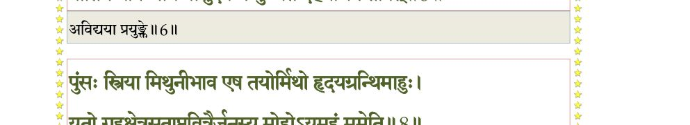
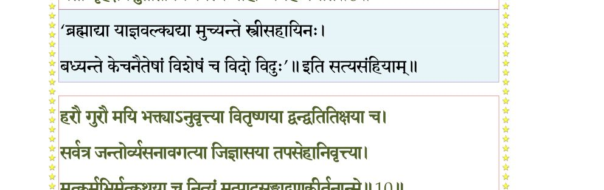
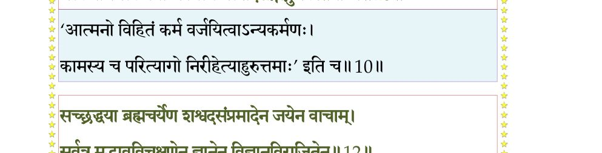
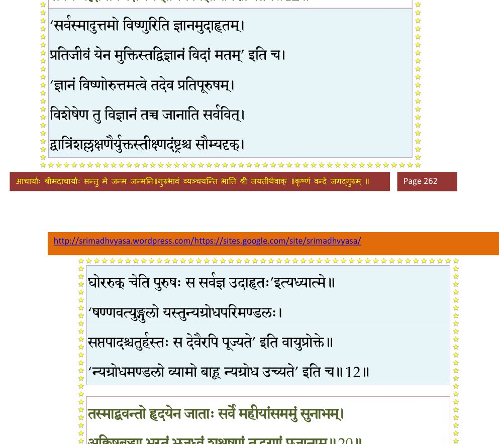
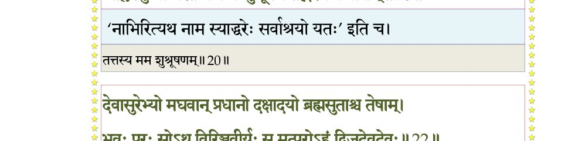
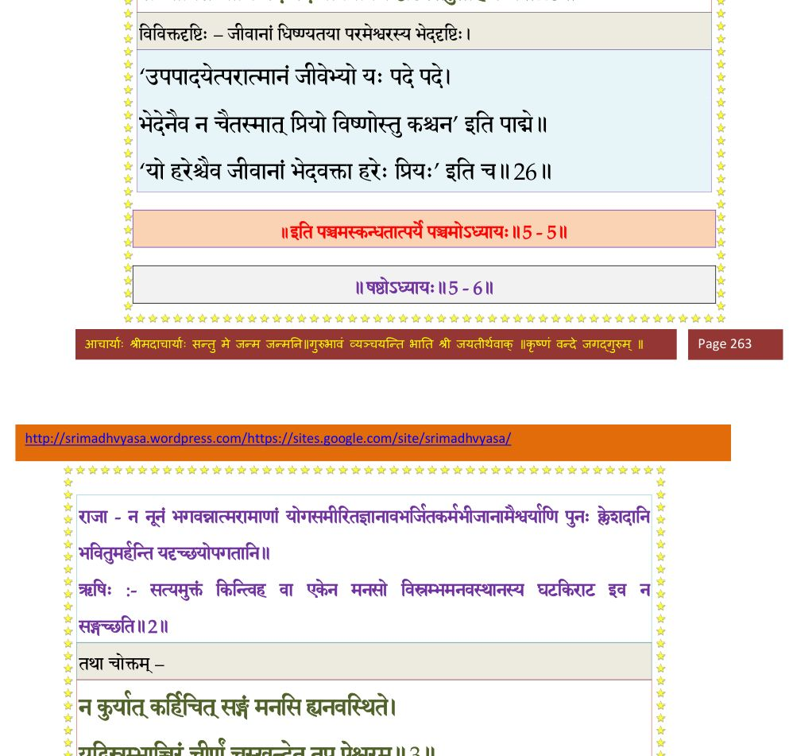

स्कन्ध 5 · अध्याय 5
श्लोक १
ऋषभ उवाच–
नायं देहो देहभाजां नृलोके कस्तत्कामानर्हति विड्भुजां ये ।
तपो दिव्यं ह्यर्हथ येन सत्त्वं शुध्येद्यस्माद्ब्रह्मसुखं ह्यनन्तम्।। १ ।।
नायं देहो देहभाजां नृलोके कस्तत्कामानर्हति विड्भुजां ये ।
तपो दिव्यं ह्यर्हथ येन सत्त्वं शुध्येद्यस्माद्ब्रह्मसुखं ह्यनन्तम्।। १ ।।
श्लोक २
महत्सेवां द्वारमाहुर्विमुक्तेस्तमोद्वारं योषितां सङ्गिसङ्गम् ।
महान्तस्ते समचित्ताः प्रशान्ता विमन्यवः सुहृदः साधवो ये।। २ ।।
महान्तस्ते समचित्ताः प्रशान्ता विमन्यवः सुहृदः साधवो ये।। २ ।।
श्लोक ३
ये वा मयीशे कृतसौहृदार्था जनेषु देहं भरवार्तिकेषु ।
गृहेषु जायात्मजरातिरासु न प्रीतियुक्ता यावदर्थाश्च लोके।। ३ ।।
गृहेषु जायात्मजरातिरासु न प्रीतियुक्ता यावदर्थाश्च लोके।। ३ ।।
श्लोक ४
नूनं प्रमत्तः कुरुते कर्मदीनो यदिन्द्रियप्रीतय आवृणोति ।
न साधु मन्ये यत आत्मनोऽयमसन्नपि क्लेशद आस देहः।। ४ ।।
न साधु मन्ये यत आत्मनोऽयमसन्नपि क्लेशद आस देहः।। ४ ।।
श्लोक ५
पराभवस्तावदबोधजातो यावन्न जिज्ञासत आत्मतत्त्वम् ।
तावत्क्रियास्तावदिदं मनो वै कर्मात्मकं येन शरीरबन्धः।। ५ ।।
तावत्क्रियास्तावदिदं मनो वै कर्मात्मकं येन शरीरबन्धः।। ५ ।।
भागवततात्पर्यनिर्णय

श्लोक ५
एवं मनः कर्मवशं प्रयुङ्क्त अविद्ययात्मन्व्यवधीयमाने ।
प्रीतिर्न यावन्मयि वासुदेवे न मुच्यते देहयोगेन तावत्।। ५ ।।
प्रीतिर्न यावन्मयि वासुदेवे न मुच्यते देहयोगेन तावत्।। ५ ।।
श्लोक ७
यदानुपश्यत्ययथागुणेहां स्वार्थे प्रमत्तः सहसाऽविपश्चित् ।
गतस्मृतिर्विन्दति तत्र तापानासाद्य मैथुन्यमगारमज्ञः।। ७ ।।
गतस्मृतिर्विन्दति तत्र तापानासाद्य मैथुन्यमगारमज्ञः।। ७ ।।
श्लोक ८
पुंसः स्त्रिया मिथुनीभाव एष तयोर्मिथो हृदयग्रन्थिमाहुः ।
यतो गृहक्षेत्रसुताप्तवित्तैर्जनस्य मोहोऽयमहं ममेति।। ८ ।।
यतो गृहक्षेत्रसुताप्तवित्तैर्जनस्य मोहोऽयमहं ममेति।। ८ ।।
भागवततात्पर्यनिर्णय

श्लोक ९
यदात्मनो हृदयग्रन्थिरस्य कर्मानुबन्धो दृढमाश्लथेत ।
तदा जनः सम्परिवर्तमानो मुक्तः परं यात्यतिहाय हेतुम्।। ९ ।।
तदा जनः सम्परिवर्तमानो मुक्तः परं यात्यतिहाय हेतुम्।। ९ ।।
श्लोक १०
हरौ गुरौ मयि भक्त्याऽनुवृत्त्या वितृष्णया द्वन्द्वतितिक्षया च ।
सर्वत्र जन्तोर्व्यसनावगत्या जिज्ञासया तपसेहानिवृत्त्या।। १० ।।
सर्वत्र जन्तोर्व्यसनावगत्या जिज्ञासया तपसेहानिवृत्त्या।। १० ।।
श्लोक ११
मत्कर्मभिर्मत्कथया च नित्यं मत्पादसङ्गाद्गुणकीर्तनान्मे ।
निर्वैरसाम्योपशमेन पुत्रा जिहासया देहगेहात्मबुद्धेः।। ११ ।।
निर्वैरसाम्योपशमेन पुत्रा जिहासया देहगेहात्मबुद्धेः।। ११ ।।
भागवततात्पर्यनिर्णय

श्लोक १२
अध्यात्मयोगेन विविक्तसेवया प्राणेन्द्रियात्माभिजयेन सम्यक् ।
सच्छ्रद्धया ब्रह्मचर्येण शश्वदसम्प्रमादेन जयेन वाचाम्।। १२ ।।
सच्छ्रद्धया ब्रह्मचर्येण शश्वदसम्प्रमादेन जयेन वाचाम्।। १२ ।।
श्लोक १३
सर्वत्र मद्भावविचक्षणेन ज्ञानेन विज्ञानविराजितेन ।
योगेन धृत्युद्भवसत्वयुक्तो लिङ्गं व्यपोहेत्कुशलोऽहमाख्यम्।। १३ ।।
योगेन धृत्युद्भवसत्वयुक्तो लिङ्गं व्यपोहेत्कुशलोऽहमाख्यम्।। १३ ।।
भागवततात्पर्यनिर्णय

श्लोक १४
कर्माशयं हृदयग्रन्थिबन्धमविद्ययाऽऽसादितमप्रमत्तः ।
अनेन योगेन यथोपदेशं सम्यग्व्यपोह्योपरमेत योगात् ।
पुत्रांश्च शिष्यांश्च पिता गुरुर्वा मल्लोककामो मदनुग्रहार्थः।। १४ ।।
अनेन योगेन यथोपदेशं सम्यग्व्यपोह्योपरमेत योगात् ।
पुत्रांश्च शिष्यांश्च पिता गुरुर्वा मल्लोककामो मदनुग्रहार्थः।। १४ ।।
श्लोक १५
इत्थं विमन्युरनुशिष्यादतज्ज्ञान्न योजयेत्कर्मसु कर्ममूढान् ।
कं योजयन्मनुजोऽर्थं लभेत निपातयन्नष्टदृशं हि गर्ते।। १५ ।।
कं योजयन्मनुजोऽर्थं लभेत निपातयन्नष्टदृशं हि गर्ते।। १५ ।।
श्लोक १६
लोकः स्वयं श्रेयसि नष्टदृष्टिर्योऽर्थान्समीहेत निकामकामः ।
अन्योन्यवैरं सुखलेशहेतोरनन्तदुःखं च न वेद मूढः।। १६ ।।
अन्योन्यवैरं सुखलेशहेतोरनन्तदुःखं च न वेद मूढः।। १६ ।।
श्लोक १७
कस्तं स्वयं तदभिज्ञो विपश्चिदविद्यायामन्तरे वर्तमानम् ।
दृष्ट्वा पुनस्तं स घृणः कुबुद्धिं प्रयोजयेदुत्पथगं यथान्धम्।। १७ ।।
दृष्ट्वा पुनस्तं स घृणः कुबुद्धिं प्रयोजयेदुत्पथगं यथान्धम्।। १७ ।।
श्लोक १८
गुरुर्न सः स्यात्स्वजनो न सः स्या-
त्पिता न सः स्याज्जननी न सा स्यात् ।
दैवं न तत्स्यान्नृपतिश्च सः स्या-
न्नमोचयेद्यः समुपेतमृत्युम्।। १८ ।।
त्पिता न सः स्याज्जननी न सा स्यात् ।
दैवं न तत्स्यान्नृपतिश्च सः स्या-
न्नमोचयेद्यः समुपेतमृत्युम्।। १८ ।।
श्लोक १९
इदं शरीरं मम दुर्विभाव्यं सत्वं हि मे हृदयं यत्र धर्मः ।
पृष्ठे कृतो मे यदधर्म आरादतो हि मामृषभं प्राहुरार्याः।। १९ ।।
पृष्ठे कृतो मे यदधर्म आरादतो हि मामृषभं प्राहुरार्याः।। १९ ।।
श्लोक २०
तस्माद्भवन्तो हृदयेन जाताः सर्वे महीयांसममुं सुनाभम् ।
अक्लिष्टबुद्ध्या भरतं भजध्वं शुश्रूषणं तद्भरणं प्रजानाम्।। २० ।।
अक्लिष्टबुद्ध्या भरतं भजध्वं शुश्रूषणं तद्भरणं प्रजानाम्।। २० ।।
भागवततात्पर्यनिर्णय

श्लोक २१
भूतेषु वीरुद्भ्य उदुत्तमा ये सरीसृपास्तेषु सुबोधनिष्ठाः ।
ततो मनुष्याः प्रवरास्ततोऽपि गन्धर्वसिद्धा विबुधानुगा ये।। २१ ।।
ततो मनुष्याः प्रवरास्ततोऽपि गन्धर्वसिद्धा विबुधानुगा ये।। २१ ।।
श्लोक २२
देवा सुरेभ्यो मघवान् प्रधानो दक्षादयो ब्रह्मसुताश्च तेषाम् ।
भवः परः सोऽथ विरिञ्चिवीर्यः स मत्परोहं द्विजदेवदेवः।। २२ ।।
भवः परः सोऽथ विरिञ्चिवीर्यः स मत्परोहं द्विजदेवदेवः।। २२ ।।
भागवततात्पर्यनिर्णय
श्लोक २३
न ब्राह्मणैस्तुलये भूतमन्यत्पश्यामि विप्रात्किमतः परं नु ।
यस्मिन्नृभिः प्रहुतं श्रद्धयाऽहमश्नामि कामं न तथाऽग्निहोत्रे।। २३ ।।
यस्मिन्नृभिः प्रहुतं श्रद्धयाऽहमश्नामि कामं न तथाऽग्निहोत्रे।। २३ ।।
श्लोक २४
धृतास्तनूरुशतीर्मे पुराणीर्येनेह सत्वं परमं पवित्रम् ।
शमो दमः सत्वमनुग्रहश्च तपस्तितिक्षानुभवश्च यत्र।। २४ ।।
शमो दमः सत्वमनुग्रहश्च तपस्तितिक्षानुभवश्च यत्र।। २४ ।।
श्लोक २६
मत्तोऽप्यनन्तात्परतः परस्मात्स्वर्गापवर्गाधिपतेर्न किञ्चित् ।
येषां किमु स्यादितरेण तेषामकिञ्चनानां मयि भक्तिभाजाम् ।। २५
सर्वाणि मद्धिष्ण्यतया भवद्भिश्चराणि भूतानि सुता ध्रुवाणि ।
सम्भावितव्यानि पदेपदे वो विविक्तदृष्टिस्तदुतार्हणं मे।। २६ ।।
येषां किमु स्यादितरेण तेषामकिञ्चनानां मयि भक्तिभाजाम् ।। २५
सर्वाणि मद्धिष्ण्यतया भवद्भिश्चराणि भूतानि सुता ध्रुवाणि ।
सम्भावितव्यानि पदेपदे वो विविक्तदृष्टिस्तदुतार्हणं मे।। २६ ।।
भागवततात्पर्यनिर्णय

श्लोक २७
मनोवचोदृक्करणैर्हितस्य साक्षात्कृतं मे परिबर्हणं हि ।
विना पुमान्येन महाविमोहकृतान्तपाशान्न विमोक्तुमीशः ।। २७ ।।
विना पुमान्येन महाविमोहकृतान्तपाशान्न विमोक्तुमीशः ।। २७ ।।
श्लोक २८
श्रीशुक उवाच–
स एवमनुशास्यात्मजान्स्वयमनुशिष्टानपि लोकानुशासनार्थं महानुभावः परमसुहृद्भगवानृषभापदेश उपशमशीलानामुपरतकर्मणां महामुनीनां भक्तिज्ञानवैराग्यलक्षणं पारमहंस्यधर्ममुपशिक्षमाणः स्वतनयं शतज्येष्ठं परमभागवतं भगवज्जनपरायणं भरतं धरणीतलपरिपालनायाभिषिच्य स्वयं भवन एवोर्वरितशरीरमात्रपरिग्रह उन्मत्त इव गगनपरिधानः प्रकीर्णकेश आत्मन्यारोपिताहवनीयो ब्रह्मावर्तात् प्रवव्राज ।। २८ ।।
स एवमनुशास्यात्मजान्स्वयमनुशिष्टानपि लोकानुशासनार्थं महानुभावः परमसुहृद्भगवानृषभापदेश उपशमशीलानामुपरतकर्मणां महामुनीनां भक्तिज्ञानवैराग्यलक्षणं पारमहंस्यधर्ममुपशिक्षमाणः स्वतनयं शतज्येष्ठं परमभागवतं भगवज्जनपरायणं भरतं धरणीतलपरिपालनायाभिषिच्य स्वयं भवन एवोर्वरितशरीरमात्रपरिग्रह उन्मत्त इव गगनपरिधानः प्रकीर्णकेश आत्मन्यारोपिताहवनीयो ब्रह्मावर्तात् प्रवव्राज ।। २८ ।।
श्लोक २९
जडान्धमूकबधिरपिशाचोन्मादकवदवधूतवेषोऽभिभाष्यमाणोऽपि जनानां गृहीतमौनव्रतस्तूष्णीं बभूव ।। २९ ।।
श्लोक ३०
तत्रतत्र पुरग्रामदुर्गाकरखेटखर्पटशिबिरव्रजघोषसार्थगिरिवनाश्रमादि-ष्वनुपदमवनिचरापसदैः परिभूयमानो मक्षिकाभिरिव वनगजस्तर्जन-ताडनावमेहननिष्ठीवनग्रावशकृद्रजःप्रक्षेपणपूतिवातदुरुक्तैस्तदविगण-यन्नेवासत्संस्थान एतस्मिन् देहोपलक्षणेऽसदपदेश अभयानुभवस्वरूपेण स्वमहिमावस्थानेनासमवरोपिताहंममाभिमानत्वादखण्डितः पृथिवीमेकचरः परिबभ्राम ।। ३० ।।
श्लोक ३१
अतिसुकुमारकरचरणोरःस्थलविपुलबाह्वंसगलवदनाद्यवयवविन्यासः प्रकृति-सुन्दरः स्वभावहासमुखो नवनलिनदलायमानशिशिरतरचार्वरुणायतनयन-सदृशसुभगकपोलकर्णकण्ठनासः विगूढस्मितवदनमहोत्सवेन पुरवनितानां मनसि कुसुमशरमुपदधानः । परागवलम्बमानकुटिलजटिलालककपिलकेश- भूरिभारोऽवधूतमलिननिजशरीरेण ग्रहगृहीत इवादृश्यत ।। ३१ ।।
श्लोक ३२
यर्हि वाव स भगवान् लोकमिमं योगस्याद्धा प्रतीपमिवाचक्षाणस्तत्प्रति-क्रियाकर्म बीभत्सितमिति व्रतमाजगरमास्थितः शयान एवाश्नाति पिबति खादत्यवमेहति हसति स चेष्टमान उच्चरितादिग्धोद्देशस्तस्य ह यः पुरीष-सुरभिसौगन्ध्यो वायुस्तं देशं दशयोजनं समन्तात्सुरभीचकार । एवं गोमृगकाकचर्यया व्रजंस्तिष्ठन्नासीनः शयानः काकमृगगोवच्चरति पिबति खादत्यववमेहति स्म ।। ३२ ।।
श्लोक ३३
इति नानायोगचर्याचरणो भगवान्कैवल्यपतिर्ऋषभोधिगतपरममहानन्दानु-भव आत्मनि सर्वेषां सुतानामात्मभूते भगवति वासुदेवे आत्मनोऽ-व्यवधानेनानन्तरोदरभावेन सिद्धसमस्तार्थैः परिपूर्णो योगैश्वर्याणि वैहायस-मनोजवान्तर्धानपरकायप्रवेशदूरग्रहणादिति यदृच्छयोपगतानि नाञ्जसा हृदयेनाभ्यनन्दत् ।। ३३ ।।
।। इति श्रीमद्भागवते पञ्चमस्कन्धे पञ्चमोऽध्यायः ।।